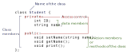

In this lecture, we discuss string streams. Then we start introducing classes.
Last lecture
Handling I/O errors.
Today
String streams and introduce classes.
Recap on flags
Remember .eof() and .fail() flags.
Write a program that reads numbers from a file and prints their sum. If it reads a non-integer number, ignore it. Numbers are written on separate lines.
Pacha’s note
I added #include <iostream>, #include <fstream> and using namespace std here to make the code compile. I also added an << endl after cerr << to avoid this in the terminal
lecture8(main)$ ./example1.so Can't open filelecture8 (main) $
but to see this instead
lecture8(main)$ ./example1.so Can't open filelecture8 (main) $
#include <iostream>#include <fstream>usingnamespace std;int main(){ ifstream inputFile("myFile.txt");if(inFile.fail()){ cerr <<"Can't open file"<< endl;return1;}int num =0, sum =0;while(!inFile.eof()){ inFile >> num;if(inFile.fail()){ inFile.clear(); inFile.ignore(1000,'\n');}else{ sum += num;}} cout <<"Reached end of file"<< endl; cout <<"The sum is "<< sum << endl;return0;}
String streams
String streams are helpful when inputs are line-oriented (i.e., user will enter a line and program has to check if inputs on that line are correct).
String streams can be used to extract inputs in the line.
Pacha’s note
I added #include <iostream> and using namespace std here to make the code compile.
#include <sstream>#include <string>#include <iostream>usingnamespace std;int main(){int ID; string name; string inputLine ="1001 Joe";// create a string stream initialized with input line stringstream myStringStream(inputLine); myStringStream >> ID;// takes input into ID myStringStream >> name;// takes input into name cout <<"Name: "<< name << endl <<"ID: "<< ID << endl; myStringStream << name << ID;// converts a string stream to a string to print it cout << myStringStream.str()<< endl;return0;}
What happens if I read more out of myStringStream than there is? myStringStream.eof() will be true.
Getline function
getline is part of iostream and it can be used to grab an entire line.
...string inputLine;// entire line entered by user gets stored in inputLinegetline(cin, inputLine);stringstream myStringStream(inputLine);myStream >> ID;myStream >> name;...
Lab 3 will use string streams.
Introduction to classes
A class is a user defined data type.
A variable of that user-defined data type is called an object.
Declaring an object is called creating an instance or instantiation.
Example
Recall structs in C.
This is a data structure that stores data of different types using one variable name.
struct Student { string name;int ID;}struct Student x;// access name of x using . operatorx.name ="Cindy";
The definition of a class goes to a header file (e.g. Student.h)
Student.h
class Student {private:int ID; string name;public:void setName(string name);void getName();void print();};
This needs a diagram to explain the different parts.

private members can only be accessed within the class.
public members can be accessed outside the class.
Why? This is called encapsulation
Hide information related to the class (e.g., student ID).
It is not available outside the class.
It brings related data and functions together.
It organizes the code.
Class implementation
The class implementation goes in a source file and it has function definitions.
Pacha’s note
I added endl after the cout statements for the same reason as above.
I also think that Student.cpp starts with #include "Student.h" instead of #include "Student.cpp" - EMAIL SENT, WAITING FOR CONFIRMATION
Student.cpp
#include "Student.h"#include <iostream>// Setter or mutator function// class name: Student// scope operator: ::// function name: setNamevoid Student::setName(string n){// private member of Student class can be accessed// inside the class implementation name = n;}// Getter or accessor functionstring Student::getName(){return name;}void Student::print(){ cout <<"Student name: "<< name << endl; cout <<"Student ID: "<< ID << endl;}
main.cpp
Instatiating and using objects here.
#include "Student.h"int main(){// declare 2 objects and allocate memory for them Student x,y; x.setName("Kenya"); y.setName("Christina");// x.ID = 2730; gives an error because we cannot access a private member// y.name = "Salma" same error y.print();// wait! what is the value of ID in Student y?return0;}
ID in x and y are not initialized. The solution is defining constructors in the next lecture.
The input stream is not cleared, so the program will continue to read the same non-integer value.
Case 3
failed..
failed..
...
infinite output
Explanation:
Same as case 2.
Exercise 3
Question 2 in Fall 2021 Final Exam [Intermediate]
Write a C++ function void readInts() that repeatedly reads integers from the standard input (using cin) and then immediately outputs the input integer (using cout), one integer per line. When a '.' character is encountered, the function prints the message Done on a line by itself and returns. If the user enters any characters other than integer digits or the '.', the function prints the message Error on a line by itself and returns. You may assume the user will never enter eof.
Thus, for example, if the user enters 51 16 700 ., the function prints:
51
16
700
Done
However, if the user enters 101 21 13 abc 444, the function prints:
Question 3 in Fall 2018 Midterm Exam [Intermediate]
Consider the following program that uses stringstreams to read a command. The command has the following format:
count intArg
The command word is count and intArg is an integer argument. The command must have only one integer argument, e.g count 3.
The function handle_count performs the reading of the integer value. If the integer is valid, it returns true and updates the value of intArg. Otherwise, it returns false.
#include <iostream>usingnamespace std;#include <sstream>#include <string>// function prototypebool handle_count(<fill in the blank>);int main(){ string line; string command;int intArg; getline(cin, line); stringstream lineStream(line); lineStream >> command;if(command =="count"){if(handle_count(<fill in the blank>)){ cout <<"Integer argument is "<< intArg << endl;return(0);}else{ cout <<"Invalid arguments"<< endl;return(-1);}}else{ cout <<"Invalid command"<< endl;return(-1);}}
Determine the number of arguments and the type of each argument and indicate them in the code above in the prototype of the function, handle_count. Further, indicate what parameters are passed to the function when it is invoked. Write your answers where indicated in the code above. You may not modify main by adding or removing line, other than by indicating the formal arguments in the function prototype and actual arguments of the function invocation.
Write the header and body of the handle_count function below so it performs as indicated above.
Solution
Part 1
We need two arguments, a stringstream (lineStream) and an int (intArg).
Question 6 in Fall 2019 Midterm Exam [Intermediate]
For each of the following main functions, indicate the output produced in response to the user entering 1 2 3 4 five on the keyboard followed by the Enter key. Choose only one answer.
Part 1
#include <iostream>usingnamespace std;int main(){int num =0;int sum =0;while(!cin.fail()){ cin >> num; sum = sum + num;} cout << sum << endl;return(0);}
6
10
14
None; the program runs in an infinite loop
Part 2
#include <iostream>usingnamespace std;int main(){int num =0;int sum =0;bool more =true;while(more){ cin >> num;if(cin.fail()) more =false;else sum = sum + num;} cout << sum << endl;return(0);}
6
10
14
None; the program runs in an infinite loop
Solution
Part 1
Result: 10 or 14. In some compilers num will be unchanged and will be added to the sum again.
Part 2
Result: 10. more will be set to false after the first non-integer input.
Exercise 6
Question 7 in Fall 2019 Midterm Exam [Intermediate]
Write a C++ function void readInts() that repeatedly reads integers from the standard input (using cin) and then immediately outputs the input integer (using cout), one integer per line.
When the end-of-file is reached, the function prints the message “End of File Reached” on a line by itself before returning. If a non-integer is input the function should print the message “Invalid Input” on a line by itself, should discard the rest of the stream and should continue reading integers again until the end-of-file is reached.